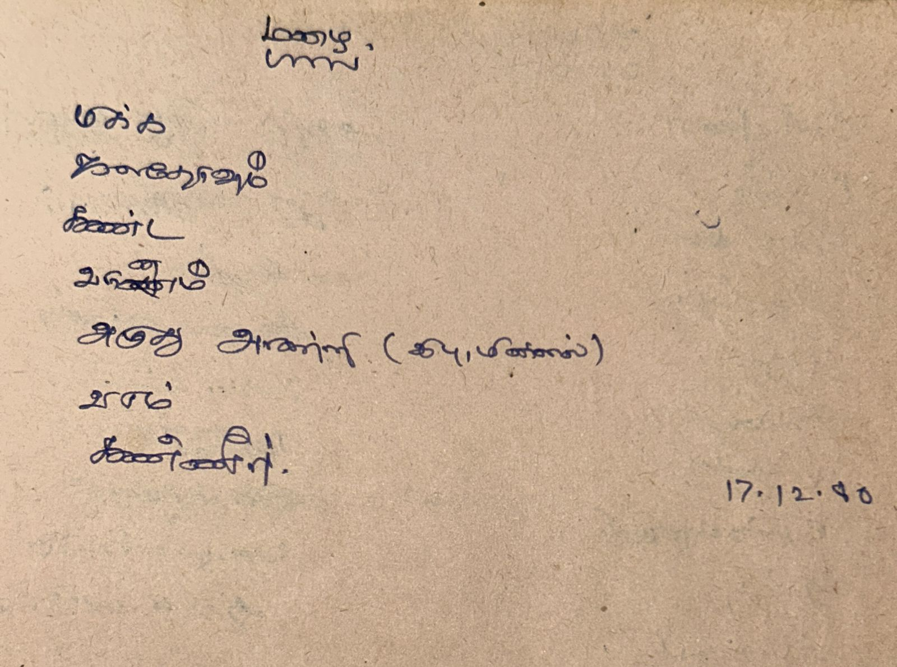
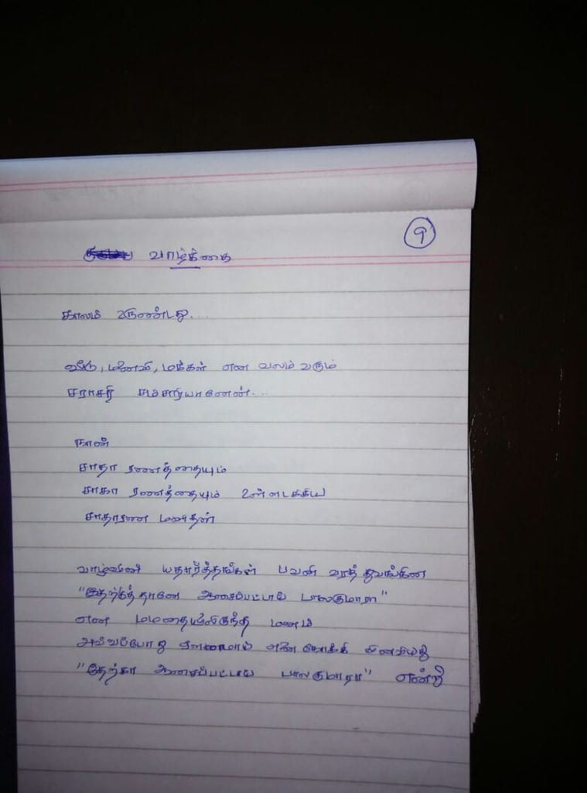
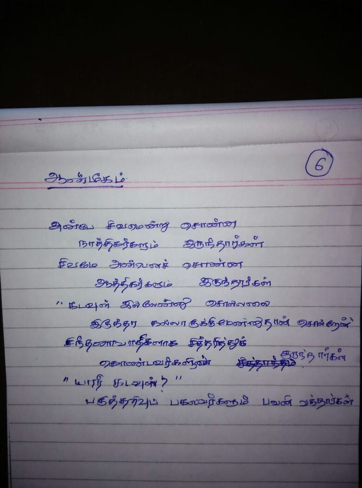

<html>
  <head>
    <link rel="stylesheet" href="../css/style.css"/>
    <title>
      Poems - CEG-86 Arts group
    </title>
  </head>
  <body>
    <h1>
      Poems - CEG-86 Arts group
    </h1>
    <table class="poem-table">
      <tr>
        <td>
          <pre>
<strong></strong>

   <strong></strong>
          </pre>
        </td>
      </tr>
      <tr>
        <td>
          <pre>
<strong>மழை </strong>
</pre>

<pre>
   <strong>-வெங்கட் </strong>
          </pre>
        </td>
      </tr>
      <tr>
        <td>
          <pre>
<strong>சிறுவெளி</strong>
மழைக்கால முடிவில் 
நீ பிரிந்திடுவாய் என்று உணர்ந்தேன் 
உலகம் அதன் போக்கில்
நாம் நம் போக்கில் 
வெளியே போராட்டங்களும் 
சாம்ராஜ்யங்களின் சரிவும் கூட 
உனக்கும் எனக்குமான அந்த சிறு வெளியில் 
அர்த்தமற்று போனது
மழையே நீ நில்லாதே 
என்று வேண்டி நின்றேன் 
பிரிவும் உலகமும் 
வெளியே காத்துக்கொண்டுதான் இருந்தன 
நமக்கு கிடைத்த அந்த கெடு முடிவதற்காய் 
மழைக்காலமும் முடிந்தது 
வருத்தம் ஏதும் வேண்டாம் 
சமாதானமாய் போய் வா!

   <strong>-ஜெ. பீட்டர் பிரசாத்</strong>
          </pre>
        </td>
      </tr>
      <tr>
        <td>
          <pre>
<strong>மழை </strong>
மாரியும் பெண் தான்,
மென்மையாகப் பூமியைத் தழுவி, 
காதலின் கண்ணீர் போல் வழங்குவதால்!

   <strong>-SGS</strong>
          </pre>
        </td>
      </tr>
      <tr>
        <td>
          <pre>
<strong>கோடை </strong>
மாரியின் காதலில்
பயிரினம் காய்த்ததால்
கண்ணீர் நின்று
கோடை வந்ததோ? 
ஆதிரன் காய்த்ததால் 
மாரியும்
தண்ணீருடன்
மாரியாய்
திரும்புகிறாளோ?

   <strong>-வைத்தியநாதன் </strong>
          </pre>
        </td>
      </tr>
      <tr>
        <td>
          <pre>
<strong>கந்தக கலகம் </strong>
காணாமலே போன மழை
கடைசியில் வந்த போது
கண்ணீரோடு காத்து இருந்தவர்கள்
கடவுளோடு கரைந்து கலந்தனர

   <strong>-செல்லையா </strong>
          </pre>
        </td>
      </tr>
      <tr>
        <td>
          <pre>
<strong>மழை </strong>
அவள் தழுவா சோகத்தில்
குடை விளிம்பில், சரம், சரமாய்
கண்ணீர்!


   <strong>-செந்தில் </strong>
          </pre>
        </td>
      </tr>
      <tr>
        <td>
          <pre>
<strong>காதலின் மறுபக்கம் </strong>

"காதலில் வென்றேன்"
   கண்களில் பிரகாசம் ..
வெளிப்படுத்திய காதலிலா ? இல்லை 
    வெளிப்படுத்தாத காதலிலா ?
சொல்ல முயன்ற காதலிலா ? இல்லை 
    சொல்ல இயன்ற காதலிலா ?
முதல் காதலிலா ? இல்லை 
   மூன்றாம் காதலிலா ?
எந்தக் காதலில் 
    யார் வென்றார்கள் ?

வென்றவர்க்கும் தோற்றவர்க்கும் 
   வேறுபாடு உண்டு..
தோற்றவர்களின் கனவு 
  பெரும்பாலும் நீடிக்கிறது...

   <strong>-கோ. இராமமூர்த்தி  </strong>
          </pre>
        </td>
      </tr>
      <tr>
        <td>
          <pre>
<strong>பிரிவு</strong>

இந்தப் பிரிவு இல்லாது போகட்டுமே
என்னை ஒரு செல்ல நாய்க் குட்டியாய் மாற்றி
உன்னுடனே அழைத்துச் செல்லேன்
உன்னுடனே இருந்து விடுகிறேன் 
என்றாள்

இந்தப் பிரிவு இல்லாது போகட்டுமே
என்னை ஒரு ரோஜாச் செடியாக மாற்றி
உன் தோட்டத்தில் நட்டுவிடேன்
உனக்காக நான் சிகப்பு ரோஜாக்களை காலம் பூராவும் பூக்கிறேன்
என்றான்

என்னைப் போக விடாதே
என்னை இருக்கச் சொல்
 என்றாள்

என்னைக் கொன்று கூறு போட்டு
உன் தோட்டத்திற்கு உரமாக்கிவிடு
என்றான்

ஆனால் பிரிவு நடந்தேறத்தான் செய்தது
பருவங்கள் தவறாது மாறுவதைப் போன்றே
பிரிவென்றொன்று வாழ்வில் இல்லாது இருந்தால் ....
 
வாழ்வின் நூலிழை  
தன்  மர்ம ஓவியத்திரையை நெய்கிறது
இன்பமும் துன்பமும்
பிரிவும் கூடலும்
இறப்பும் உயிர்ப்பும்
இரண்டறப் பிணைந்து ...
 
சந்தோஷத்தின் ஆழம் அதிகமா
துயரத்தின் ஆழம் அதிகமா
 என்றுக் கேட்டாள்
இந்தப் பிரிவின் ஆழம் தான் அதிகம்
 என்றான்.


   <strong>-பீட்டர் பிரசாத்  </strong>

------

<strong>The Parting</strong>

Let this parting not be
Change me into a puppy
That you can take me with you as your pet 
And  I can be with you  lifelong,  she said

Let this parting not be
Make me into a rose  plant
That  you can plant me  in your garden
So that I shall bloom red roses for you forever, he said

Don’t let me go
Ask me to stay, she said
Kill me and cut me into pieces
And bury me as manure in your garden, he said

But parting did happen
Just as sure as the seasons do change
Would that there were  no partings….

But the thread of Life weaves its own mystery
A tapestry of joy and sorrow
Parting and Reunion
Death and resurrection

Is joy deeper or sorrow, she asked
This parting is the deepest, he said.

   <strong>-Peter Prasad  </strong>
          </pre>
        </td>
      </tr>
      <tr>
        <td>
          <pre>
<strong></strong>

நமக்குள் நடந்தேறிய  பெரும் காதல் 
நிகழ்ந்த பெரும் யுத்தம் 
இன்று அதன் நினைவாக எஞ்சுவது 
ஏதுமில்லை...
சில அன்பளிப்புகள் 
சில தழும்புகள் தவிர
அக்காயங்கள் நிகழ்ந்த போது அதன் ஆழம் 
உயிரையே விலை கேட்டது என்பதை
இன்று யாரறிவார்
பரிமாறிய புகைப்படங்கள், கடிதங்கள், கவிதைகள்
தங்கள் பொன்னிற ஒளியிழந்து 
நினைவுகளின் பின்புலத்திற்கு தள்ளப்பட்டுவிட்டன  
நீ செயலில் மூழ்குகிறாய்
நான் என் புத்தகங்களில் 
குடும்பம், நண்பர்கள் மத்தியில் 
கொஞ்சம் ஆறுதல் கிட்டும் 
மறையும் சூரியனின்
கடைசி பொற்கதிர்கள் வீச 
ஒரு கேள்வி எஞ்சியிருக்கும்...
ஏன்? 
மேலும் சில உதிரிக் கேள்விகள் 
இழந்ததை பெற்றது ஈடு செய்ததா?
திரும்ப முடியாத தொலைவு சென்ற பின் 
வந்த பாதை தவறென்று சொல்லி 
என்ன பயன்?
உண்மையில் உன் நம்பிக்கையும் தைரியமும் 
உன்னைக் கைவிட்டது  
கடைசி  தடைக்கல்லில் 
 நீ நிலைக் குலைந்தாய்
அது இரக்கம் என்னும் தடைக்கல் தான்
என்றாலும் உனக்குப் புரியவில்லை 
நம் மகத்தான காதல் தான் 
இந்த இரக்கத்தை ஈன்றதென்று ...
காதல் விட்டுச் சென்றபோது 
இரக்கம் மண்ணைக் கவ்வியது 
இதுவும் உண்மை தான் 
இனி என்ன நடந்தாலும் 
நாம் தொட்ட சிகரங்கள் 
கண நேரமெனினும்
உடலும் உயிரும் மனசும் கலந்த
அந்த ரசாயன மாற்றம் 
இனி என்றும் நிகழ வழியில்லை...
ஒரு வேளை
இன்னொரு உலகத்தில் 
இன்னொரு காலத்தில் 
ஒரு புதிய வானம் 
ஒரு புதிய நிலவு 
நாம் மறுபடியும் சந்திக்க
வகை செய்யலாம் 
யாரறிவார் தொலைவானத்திற்கு அப்பால் 
என்ன இருக்கும் என்று?
ஆனால் பார் அன்பே 
நாம் நடந்த அதே பாதைகளில் 
புதுக் காதலர்கள் நடந்து செல்கின்றனர்
அதே அழியாக் காதலின் வாக்குறுதிகளை 
பரிமாறிக் கொண்டு 
ஒரு வேளை
நாம் தோற்ற இடத்தில்
அவர்கள் ஜெயிக்கலாம் 
ஜெயிக்காமலும் போகலாம் ...
காதல் 
அழிவற்றது அல்ல 
அழிவற்றது
 காதலின் முடிவற்ற 
சுழற்சி தான்

   <strong>-பீட்டர் பிரசாத் </strong>

-----------

<strong></strong>

Of the great love 
That we once shared
And the great battles 
That we once fought 
Nothing remains…
Except a few souvenirs
Of the gifts that we exchanged
And a few scars
Of wounds that were once so deep
They could have been mortal 
The exchanged messages, photographs
Have lost their golden halo
Consigned to the archives of memory…
You immerse yourself in action
I, in my books
In family, friends
Some solace is found…
As the dying sun 
Sheds its last golden rays
One question will remain 
Why?
And some more questions …
Was what was gained worth the loss?
Having travelled beyond the point of no return
What is the point of admitting 
That it was not worth it?
Truth is that you lacked courage and faith 
You collapsed at the last hurdle
It was the hurdle of compassion 
Only you did not realize 
That only our great love 
Gave birth to this compassion…
When love walked away
Compassion bit the dust
Truth also is
Whatever happened 
The peaks that we touched 
Even but for a while 
The chemistry of body and mind
Will never happen again…

Maybe in some other world
In some other time 
We shall meet again 
Under a new sky 
A new moon 
Who knows what lies beyond?

But look
On the same paths that we once walked 
New lovers walk
Exchanging the same vows 
Of eternal love
Maybe they will succeed 
Where we had failed 
Maybe not…
Love is not eternal 
The endless cycle of love is

   <strong>-Peter Prasad</strong>
          </pre>
        </td>
      </tr>
      <tr>
        <td>
          <pre>
<strong>Incomplete Combinations</strong>

இறந்தும் இருப்பவர்கள் 
இருந்தும் இறந்தவர்கள் 

இருப்போடு இறந்தவண்ணம்
இறப்போடு இருந்தவண்ணம்

வாழ்வு, முரண் கணிதம்! 

   <strong>-செந்தில் </strong>
          </pre>
        </td>
      </tr>
      <tr>
        <td>
          <pre>
<strong>Song of the as yet distant eventide</strong>
 
Come!  The storm is over
Tranquil the waters of my soul
Drink from it and gather strength!
 
Come! The battle with the world is over
Peace reigns over my land
Share of my bread and wine!
 
Come! The blazing sun is no more
Cool the evening breeze
Let us sit and talk through the endless night!
 
Come! The wind sweeps the golden autumn leaves
How graceful your white tresses
I will  crown you with winter’s flowers!
 
Come! The scars have healed
We survived to tell our tale
It is now the eventide of thanksgiving!
 
Come! The eagle and the dove have come to roost together
All things shimmer in the twilight of truth and love
Beyond the realms of good and evil!
 
Come! For a while  my soul was your home and heaven
Those memories will always win
It is  the time of your homecoming!

   <strong>-Peter Prasad</strong>
          </pre>
        </td>
      </tr>
      <tr>
        <td>
<iframe width="1120" height="630" src="https://www.youtube.com/embed/Rl4zUm526IM?si=cmuF6vtl3Y_M3Ieu" title="YouTube video player" frameborder="0" allow="accelerometer; autoplay; clipboard-write; encrypted-media; gyroscope; picture-in-picture; web-share" referrerpolicy="strict-origin-when-cross-origin" allowfullscreen></iframe>
        </td>
      </tr>
      <tr>
        <td>
          <pre>
<strong>உள்ளும், புறமும்</strong>

பெரிதாய்ச் சுற்றம்
அழியா நட்பு
செயல்வழி அன்பு
நிறுத்தாப் பகிர்தல்
மன, வாய் உண்மை

குறுகி
விலகி
வாய்வழி நோக்கி
ஒரு வழி பழகி
கசந்து

உள்
புறமாகுமா ?
புறம்
உள்ளாகுமா ?

போர் சுயம் தான்!

பார்ப்போம்! 

   <strong>-செந்தில்</strong>
          </pre>
        </td>
      </tr>
      <tr>
        <td>
          <figure>
            
            <figcaption>Author: Gram (G. Ramamoorthy)</figcaption>
          </figure>
        </td>
      </tr>
      <tr>
        <td>
          <figure>
            
            <figcaption>Author: Gram (G. Ramamoorthy)</figcaption>
          </figure>
        </td>
      </tr>
      <tr>
        <td>
          <figure>
            
            <figcaption>Author: Gram (G. Ramamoorthy)</figcaption>
          </figure>
        </td>
      </tr>
      <tr>
        <td>
          <pre>
நினைத்தேன் ... எழுதுகிறேன்..
(Title credit  - Cho , Thuglaq )
--------------------------------------
பல பத்தாண்டுகளுக்குப் பிறகு இன்று எதேச்சையாக விகடன் வார இதழ் கண்ணில் பட்டது. படிக்கத்துவங்கலாம் என்றெண்ணியபோது <br/>பள்ளிப்பருவ நாட்கள் சிறு மின்னலென கண் முன்னே தோன்றி மறைந்தது ..<br\>
<br\>
எங்கள் வீட்டில் மூன்று பத்திரிக்கைகள் வாங்கும் பழக்கம் இருந்தது. ஒன்று, ஆங்கில செய்தித்தாள் (THE HINDU  அல்லது INDIAN <br/> EXPRESS  - எனது மூத்த சகோதரர் இரண்டு பத்திரிக்கைகளிலும் வேறு வேறு கால கட்டத்தில் பணி புரிந்தார். அவர் பணி <br/>செய்யும் நிறுவனத்தைப் பொறுத்து நாங்கள் வாங்கும் செய்தித்தாளும் மாறி மாறி வந்து போயின ) ; இரண்டாவது - துக்ளக் <br/>(முதல் பதிப்பு முதல் எனது தகப்பனார் வாசிக்கும் திறன் இருந்த காலம் வரை தொடர்ந்து வாங்கிவந்ததாக  நினைவு); மூன்றாவது <br/>- ஆனந்த விகடன் ( சிறு வயதில்,  முதலில் படிக்க வேண்டும் என்று சகோதரிகளுடன் சண்டையிட்ட நிகழ்வுகள் இன்றும்</br> பசுமையாக) ..<br\>
<br\>
ஆங்கில செய்தித்தாள்களில் பெரும்பாலும் sports page  படிப்பேன் (இல்லை, பார்ப்பேன் எனச் சொல்வதே பொருத்தமாக இருக்கும்). <br/>சில  பக்கங்களை தலைப்பின் சுவாரஸ்யித்திற்கேற்ப படித்ததாக நினைவு. அன்றைக்கு இருந்த ஆங்கில ஞானம் சூனியத்திற்கு வெகு <br/>அருகில். பெரும்பாலானவற்றை விருப்பத்துடன் படித்ததாக நினைவில்லை.   இன்றும் கிட்டத்தட்ட அதே நிலைமை - வாசிப்பது <br/>என்ற நிலையிலிருந்து புரட்டுவது (browsing ) என்ற நிலைக்குப் பழக்கப்பட்டுப் போனேன். பிடித்த தலைப்புகளில் <br/>செய்திகள் இருந்தாலும் , font size அளிக்கும் சவாலை சமாளிக்க முடியாமல் அடுத்த பக்கம் தாவுவது இயல்பாகிப் போனது<br/>. முன்பெல்லாம், இந்தப் பொருள் என்றாவது பயன்படும் என்ற எண்ணத்தில் வாசித்துக்கொண்டிருந்தேன். இன்று, இந்தப் பொருள் தேவையில்லை <br/>, இது உபயோகப் படப் போவதில்லை என்ற எண்ணத்தில் பெரும்பாலான பகுதிகளைக் கடந்து போகிறேன். ஆம், அகவையின் <br/>ஆதிக்கம் அதிகமாய்த் தென்படுகிறது..<br\>
<br\>
துக்ளக் - அரசியல் அரிச்சுவடியை அறிமுகப்படுத்தியது என்றால் மிகை ஆகாது. நையாண்டித்தனத்தை  (sarcasm ) ரசிக்கத்துவங்கியதும் <br/>அதன் வாயிலாகத்தான். கேள்வி - பதில் பகுதி நான் மிகவும் விரும்பிப்படித்த பகுதிகளில் ஒன்று. ஒரு கால கட்டத்தில் <br/>துக்ளக்-ஐ ஒரே வாசிப்பில் முழுமையாகப் படிக்கும் அளவிற்கு ஆர்வமும் , கவனமும் இருந்தது.  அதனைப் படித்தும் <br/>வெகு காலங்கள் ஆகிவிட்டது. <br\>
<br\>
விகடன் - நான் மிகவும் இரசித்துப் படித்த பத்திரிக்கைகளில் ஒன்று. சிறுகதைகள், துணுக்குகள், மதனின் கார்ட்டூன்கள் , சினிமா <br/>விமர்சனங்கள் எனப் பல் வேறுவிதமான பகுதிகளையும் சுவாரஸ்யத்துடன் படித்த நினைவு நன்றாக இருக்கிறது. மாணவர் பக்கம் <br/>சிறப்பாக அமைந்ததாகவும் நினைவு. விகடனைப் பற்றிக் குறிப்பிடும்போது நம் நண்பர்களைப் பற்றிய இரண்டு செய்திகள் - <br/>ஒன்று : பத்தாம் வகுப்பு பொதுத்தேர்வில் நண்பர் செல்லையா மாநில அளவில் முதல் இடம் பெற்றது நம் அனைவருக்கும் தெரிந்திருக்க <br/>வாய்ப்பிருக்கிறது. செல்லையாவினுடைய புகைப்படம் அட்டைப்பக்கத்தில் வந்ததும், அவனுடைய நேர்காணல் உள்ளே இருந்த <br/>பக்கங்களில் படித்ததும் இன்று நடந்தது போல் இருக்கிறது. அன்றைக்கு,  ஒரு நாள் செல்லையாவை சந்திப்போம் என்ற எண்ணம் <br/>துளியும் இருந்ததில்லை. காலம் அறிமுகப்படுத்திய கதாநாயகர்களில் செல்லையா மிக முக்கியமானவர்.  அவருடன் இன்றும்  <br/>நட்புப் பயணம் தொடர்வதை எண்ணி பெருமை அடைகிறேன்.  இரண்டு: நம்மில் சிலர் அறிந்திருக்கக்கூடும். சிவபால நாராயணனின் <br/>(இன்றைக்கு - நரேன் ) கதை விகடனில் வெளியானது (கல்லூரி நாட்களுக்குப் பிறகு என்றே நினைவு)....<br\>
<br\>
இந்த நினைவுகளின் பின்புலத்தில்..இன்றைக்கு என் முன்னே இருந்த விகடன் வார இதழைப் புரட்டத்துவங்கினேன். ஏனோ மனம் பற்றவில்லை. <br/>இயன்ற அளவு முயற்சித்தேன். ஒரு சில பக்கங்களையே என்னால் இரசிக்க முடிந்தது.  காலத்தில் கரைந்து போனது பத்திரிக்கையின் <br/>தரமா இல்லை காலத்திற்கேற்ப ரசனையை புதுப்பித்துக்கொள்ளாத எனது மனோநிலையா ?  அலசும் அளவிற்கு ஆர்வம் இல்லை..<br\>
<br\>
கால வெள்ளத்தில் கரைந்து சென்றது கனவுகள் மட்டுமல்ல ..கவனமும் தான்..நகர்ந்து செல்கிறேன்..<br\>
<br\>
அன்புடன்<br\>
<strong>கோ. இராமமூர்த்தி.</strong><br\>
(1 May 2022)<br\>
          </pre>
        </td>
      </tr>
      <tr>
        <td>
          <pre>
This is about the Russian-Ukranian war. Politics aside, <br/>
as we all know, war is the ultimate in violence .  <br/>
Felt sharing some of my  thoughts - Gram)

(அ)தர்ம யுத்தம்
----------------
"சொல்லக்  கொதிக்குதடா  
    நெஞ்சம் "
            - மகாகவி பாரதி 

கண்ட கனவனைத்தும்
  கண்முன்னே சிதைந்து போக
மனம் கொண்ட மணாளனும்
  கண்முன்னே மடிந்து போக...

நிலம் விட்டு
  புலம் பெயரும் அவலம்..
காலன் தொட்டுவிடும் 
  தூரத்தில் உயிர்வாழும் துயரம்.. 

குருதிக்குக் குரலிருந்தால்
   கூச்சலிட்டிருக்கும் ..
" என்னை இறைக்காதே ,.
உன்னுடலில்  ஓட வேண்டிய நான் 
  தெருவில் ஓட வேண்டாம்"..

கட்டிடங்களுக்கு காலிருந்தால் 
    ஓடியிருக்கும் ..
"என்னை உருக்குலைத்ததது 
    போதும் விட்டுவிடு "

கற்காலத்திற்கும் 
   தற்காலத்திற்கும்
வேறுபாடு உண்டா?

ஆம்...

உலகைச் சிதைக்க
  சிலகாலம் பிடிக்கும் கற்காலத்தில்..
அகிலத்தை அழித்தொழிக்க 
  அரைநொடி போதும் தற்காலத்தில்..

ஆம்.. உண்மையிலேயே 
    முன்னேறி இருக்கிறோம் .

அரக்கத்தனத்தின் 
   அரவம் கேட்காதபடி 
நவநாகரீகப் போர்வையில் 
   நச்சைத் தூவத் துடிக்கிறோம்

நிழல் நிஜமான கதையைக் 
   கேள்வியுற்றிருக்கிறேன்..
இங்கோ..
நிஜம் நிழலாகிக் 
   கொண்டிருக்கிறது  
நிழல் கருகி நிர்மூலமாகிக் 
   கொண்டிருக்கிறது..

அருளற்ற அயலானின்
   ஆதிக்கத்தில் 
இருளடைந்து போனது
    இவர்களது வாழ்க்கை..

மனம் கொண்ட 
   மனிதர்கள் இன்று 
இரணமாகவும் 
   பிணமாகவும் ..

எஞ்சியிருப்பவர்கள்

காலன் வரவை 
  எதிர்பார்ப்பவர் சிலர்..
சிதைந்து போன கனவுகளுடன் 
  காலத்தின் மாற்றத்தை 
எதிர்நோக்குபவர்  பலர் ..

இறுதியில்..
 
ஒரு நாள் இந்தப் போர் 
   ஓயக்கூடும்..
"சாணக்கியத்தனத்தின் வெற்றி"
    ஒரு சாரார் ...
"ஆணவம் தகர்க்கப்பட்டது"
    மறு சாரார் ..
மண்ணில் மடிந்தோர்  
  மறக்கப்படுவர் ..
கண்ணில் குருதியை ஏந்தி 
  காலத்தைப் போக்குவார் சிலர்..
நவநாகரீக உலகம்
   எதுவும் நடவாதது போல் 
நாளைய சாதனையைப்
   பட்டி தொட்டி எங்கும்
பறைசாற்றிக் 
    கொண்டிருக்கும்..

- <strong>கோ. இராமமூர்த்தி </strong>
(6-Mar-2022)
          </pre>
        </td>
      </tr>
      <tr>
        <td>
          <pre>
<strong>இன்னும் ஒரு வாழ்வுக்கான</strong>
<strong>#   பீட்டர் பிரசாத்</strong>
               
கோப்பை முழுதும் தீர்ந்த பின்னும்
எஞ்சியிருக்கும் கொஞ்சம் மது
               
எல்லாப் பயணங்களும் முடிந்த பின்னும் 
அழைக்கும் ஒரு பயணம் 
               
ஆடிய காலங்கள் மறைந்த பின்னும் 
ஆத்மாவில் ஒளிந்திருக்கும் ஒரு  நடனம்
               
போராட்டங்கள் யாவும் முடிந்த பின்னும்
உயிர்க்கும்  ஓர்   இறுதிப் போர் 
              
அனைத்துக் கனவுகளும் அஸ்தமித்த பிறகும் 
அடிவானத்தில் ஒன்று மிளிறும்
               
எல்லாவற்றையும் பேசிவிட்ட போதும்  
பேசப்படாத ஒன்றின் மௌனம்    
               
இறக்கும் கணத்திலும் எதிர்ப்படும்
வாழ்வுக்கான ஏதோ ஒன்று.

------------------------------------------
              
<strong>The surd </strong>
<strong>-Peter Prasad </strong>
              
Even when the cup has been drained
There is always some wine left in the cup 
Even when all journeys are over
There is yet always one final journey to make
Even when our dancing days are over
There is one more dance left in our souls
Even when all battles are over
There is one last battle to be fought
Even when all dreams set with the setting sun
A new dream stirs in the distant horizon
Even when we have spoken everything
There is something left unspoken
Even when we die
There is something still to live for!
          </pre>
        </td>
      </tr>
      <tr>
        <td>
          <pre>
<strong>வெண் டயாகிராம் (Venn diagram)</strong>
              
என் சுகம்
உங்கள் சுகம்
              
உங்கள் சுகம்
உங்களோடு
              
உங்கள் வலி
என் வலி
              
என் வலி
என்னோடு மட்டும்
              
முரண் கணிதமாய்
என்றும்
என் வாழ்வின்
வெண் டயாகிராம்
              
     <strong>-செந்தில்</strong>
          </pre>
        </td>
      </tr>
      <tr>
        <td>
          <pre>
<strong>பாரதி </strong>
சிந்திக்கவும் 
    தயங்கும் 
சிந்தனைகளை 
    சிந்தித்தும் 
தந்திட்டும்
    சென்றாய்...

சந்திக்கவும் 
   இயலாத 
சங்கடங்களை 
    சந்தித்தும் 
நிந்தித்தும்
   வென்றாய் ....

வாழ்வதற்கு 
  சுதந்திரத்தையும் 
மீள்வதற்கு 
  விடுதலையையும் 
போதித்தாய் ....

அவ்வையின் 
   மறுபிறவியாய்  
"புதிய ஆத்திச்சூடி "..

ஆசான்களின் 
    பிரதிநிதியாய்
"ஞான ரதம்"..

வியாசரின் 
     விமர்சகனாய்
"பாஞ்சாலி சபதம்"..

சொல்லிக்கொண்டே 
   போகலாம்
இந்த  ஞாலக் கவியின் 
   கோலப் படைப்புகளை ... 

"கவலை துறந்திங்கு 
வாழ்வது வீடு ..."
முக்திக்கோர் இலக்கணம் ...  

"எமபயம் கெடச் செய்தவன் 
எங்கள் அல்லாஹ் அல்லாஹ் .."
பக்தியில்  பரந்த மனம் ...

"துன்பமிலா நிலையே சக்தி ...
தூக்கமிலாக் கண் விழிப்பே சக்தி .."
சக்திக்கோர் விரிவுரை ...

சுதந்திரப் பாடல்களில் 
   துணிவு ...
கண்ணம்மா பாடல்களில் 
   கனிவு ..
பக்திப் பாடல்களில் 
   பணிவு 
ஞானப் பாடல்களில் 
   தெளிவு 
உரைநடையில் 
  கம்பீரம் ...
அறியாமை நிலையில் 
   துடிதுடிப்பு..
அறிந்த நிலையில் 
   அமைதி..
......
அவன் எழுத்துக்களில் 
    வெளிப்பட்ட 
பண்புகளில் சில ..

"சிந்தை தெளிவாக்கு 
அல்லால் இதை 
செத்த உடலாக்கு "

காலத்தைக் கடந்த 
சிந்தனைகள் 
என்பதனால்தானோ
என்னவோ 
காலனால் கூட 
காத்திருக்க 
முடியவில்லை ...

"காலா..
எனதருகே வாடா ..
உனைக் 
காலால் எட்டி மிதிக்கிறேன் "

அஞ்சித்தான் என்னவோ 
காலனும் வந்தான் 
யானை வடிவில் ..

காலன் 
கொண்டு போனது 
பாரதியின் 
உடலை மட்டுமே ...

"எமக்குத் தொழில் எழுத்து 
இமைப்பொழுதும் சோராதிருத்தல் "

காலத்தால் 
கரையாதது
அவனது 
சொல்லும் 
எழுத்தும்...

வாழ்க பாரதி புகழ் ...
===============
   <strong>-கோ. இராமமூர்த்தி (Sep 10, 2018) </strong>   

Translation by Chelliah.....

 Bharathi

Seeded and gave away even those houghts which others hesitate to harbor

Encountered, belittled and won challenges others can't even tolerate

Taught us of independence to live and freedom for salvation

New athichoodi as Avvai's another avatar

Gnana ratham as representative of teachers

Panjali sabatham as critic of Vyasar

Countless are beautiful creations of this universal poet

Grammar for liberation - a home is where one resides without worries

All encompassing in devotion - Allah rids us of fear of death

Lecture about energy - Shakti is where no adversity lasts and there is wide awakening even with no rest

Variety of songs depict his virtues -
Boldness in patriotism
Affection about Kannamma
Humility in devotion
Clarity in wisdom
Majesty in prose
Yearning for information
Peace after knowledge

"Make thoughts clear otherwise let the body die"

Even Lord of Death couldn't wait for this all-time thinker

"Oh Death, will kick you away if you come near me"

Scared even the indomitable Yama so he came in the guise of an elephant

He could still take away only Bharathi's body

" My job is to write without tiring even for a minute mentioned"

His words and writings won't fade away with time

Long live Bharathi's name

Gram
   <strong>-Chelliah </strong>   
          </pre>
        </td>
      </tr>

    </table>
  </body>
</html>
